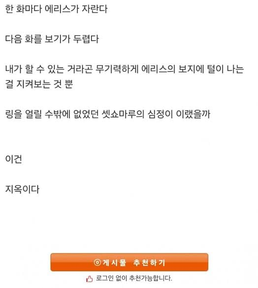
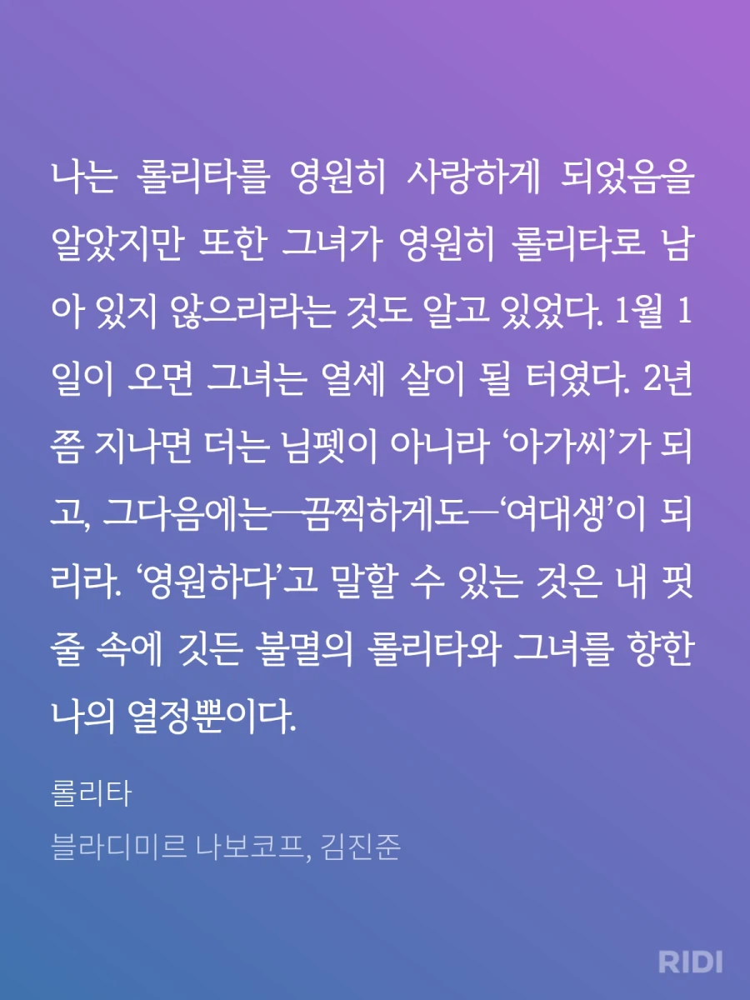
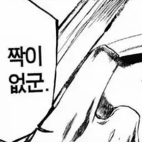

털은 왁싱하면 되잖아
털이 있고 없고가 아닌
털이 났다라는 그 사실만으로
우리들은 씻을 수 없는 상처가 생긴다
ㅅㅂ 진짜 님ㅂ 다니는 회사에 이거 캡쳐해서 내용증명 보내버리고 싶어요
회사 안다녀!
정말 대단한 가불기다!
회사 다니면서 40렙 넘게 찍을수 있을거라 생각함?
당신 당장 숨을 10분간 멈추시오 이 쓰레기같은 놈

그래서 1000살 불멸자 로리 같은게 나오는것이지
심기체이론에 의하면 그건 더이상 로리가 아닌게 아닐까
그 한계때문에 심기체론은 이론에 머무를 수 밖에 없다는것임

애초에 로리라는 장르가 저 소설에서 기원된거니까
늙지않는 버튜버가 답이야
기분나빠
웬 보지 타령이야 성적대상이라면 털은 원래 전신에 있는 거 아니었나
성장하는 걸 보면서 좋아할 순 없는 거냐
롤리타는 험버트에게서 벗어나려고 다른 아저씨인 퀼티를 따라가지만 그 역시 소아성애 난교파티를 즐기는 미친새끼였고 롤리타는 여기서도 도망쳐서 한 시골마을에 살게되고 거기서 남자친구를 만남.
그이후 롤리타는 17세가 되어 남자친구의 아이를 임신하게되고 돈이 궁했던 돌로레스(롤리타)는 험버트에게 편지를 보내 돈을 부쳐줄수있냐고 물어봄. 험버트는 득달같이 따라가서 같이 살자고 제안하지만 롤리타는 거절. 그치만 롤리타에게서 퀼티와의 일을 듣게되고 퀼티를 살해하기로 마음먹음. 그리고 퀼티를 살해하고 살인혐의로 기소되지만 구치소에서 혈전증으로 사망. 롤리타는 아이를 낳다가 산통으로 사망하면서 롤리타라는 소설의 등장인물은 모두 사망으로 끝나게됨
분명 원작 읽었는데 줄거리를 보고도 내용이 하나도 기억안나네 ㅋㅋㅋ
닉이 왜 저 소설 등장ㅇ인물임?
대놓고 로리라고 지으면 천박하잖음
nymphet이라는 좋은 표현이 있다 게이야
.....와우.....

이건 지옥이다..
롤리타가 뭔데 소설 주인공 이름임??
ㅇㅇ 돌로레스의 애칭이 롤리타임
첫 짤속에 에리스가 글쓴 개붕이야?
아니 나는 불화의 여신 에리스에 따온거임
에리스가 누군데
아 저글 자체가 원래 있는걸 천박하게 바꿔버린거였구나